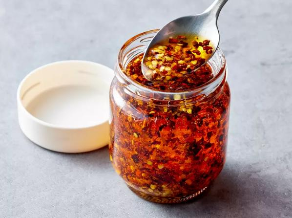

The content of this this page was taken from
allrecipes.com
Chili Oil

Description
If you are looking how to make chili oil, try this easy recipe made with
everyday ingredients you might already have in your pantry.
Ingredients
- 3 tablespoons crushed red pepper
- 1 cinnamon stick
- 1 whole star anise
- 1 teaspoon Szechuan peppercorns, crushed
- 1/2 teaspoon granulated garlic
- 1 cup neutral oil (such as peanut, vegetable, or canola)
Steps
- Gather all ingredients.
-
Combine crushed red pepper, cinnamon stick, star anise, Szechuan
peppercorns, and garlic in a heatproof bowl.
-
Heat oil in a small saucepan over medium until it reaches 225 degrees F
to 250 degrees F (110 degrees C to 120 degrees C), 3 to 4 minutes.. It’s
hot enough when a few flakes of crushed red pepper will sizzle in the
oil.
-
Pour oil over spices. Let stand until cooled completely, about 1 hour.
- Strain out spices with a fine mesh sieve, if desired.
-
Label and store in refrigerator up to 6 months. For best results, always
use clean utensils when handling the oil.